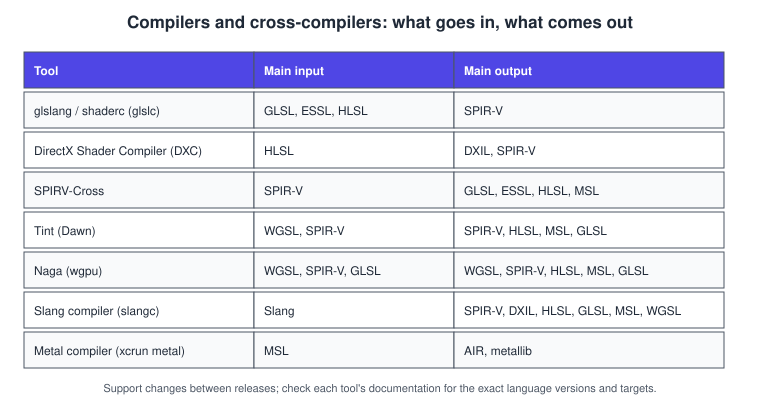
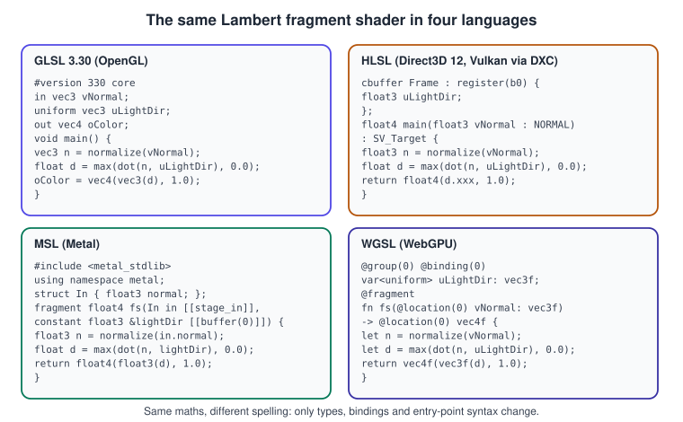
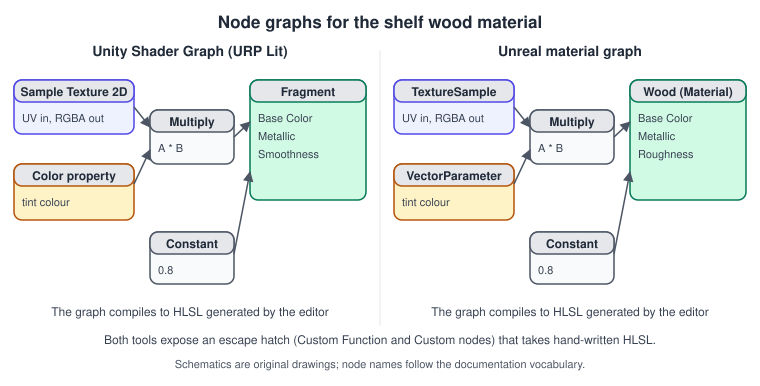

Shading Languages Landscape
|
This content was generated with the assistance of AI and should be verified against the official documentation before being relied on in production. |
Every GPU program is written in a shading language, and there is not one of them. Each graphics API grew its own: GLSL for OpenGL and Vulkan, HLSL for Direct3D, MSL for Metal, WGSL for WebGPU, and a family of intermediate formats and cross-compilers that move shaders between them. Knowing how the languages relate is what lets a Bookshelf renderer written for one API be ported to another, and explains most of the error messages in a shader build. This page maps the landscape, compares the languages side by side, shows how shaders are compiled and cross-compiled, and describes the graph editors that engines put on top. It was checked in November 2026. Versions referred to are GLSL 4.60 and ESSL 3.20 (Khronos), HLSL Shader Model 6.x (Microsoft’s DirectX Shader Compiler), recent Metal Shading Language releases (Apple), WGSL (a W3C Candidate Recommendation Draft), SPIR-V 1.6 (Khronos), and Slang (a Khronos project since November 2024, shipped in the Vulkan SDK). Examples were written for those versions and for Unity 6 and Unreal Engine 5.
What a shader is, and what every language must express
A shader is a small program that the GPU runs many times in parallel, once per vertex, per fragment, per compute thread and so on. Whatever the language, it must declare the same things, which is why the languages feel similar:
-
the stage (vertex, fragment, compute, and the optional tessellation, geometry, mesh, task and ray-tracing stages; see Advanced Pipeline Stages) and its entry point;
-
inputs and outputs between stages: vertex attributes, interpolated values, render-target outputs, and the built-in values such as the clip-space position and the fragment coordinate;
-
resources: uniform or constant buffers, storage buffers, textures, samplers, storage images, and how each is bound to a slot, a set, a group or an argument table;
-
types and operations: scalars, vectors, matrices, structures, arrays, and the maths and texture functions;
-
memory layout rules for data shared with the CPU, and barrier and atomic operations for compute.
All of them are C-like, strongly typed, and have no recursion, no pointers to arbitrary memory in the classic languages, and limited dynamic allocation. What differs is syntax, how bindings are declared, and the ecosystem of compilers.
The family tree
Two ideas explain the diagram.
First, there is the source language the programmer writes and the intermediate representation (IR) that a compiler produces.
SPIR-V (Khronos, version 1.6) is a binary, SSA-form IR that Vulkan consumes directly, that OpenGL 4.6 can ingest through
GL_ARB_gl_spirv, and that serves as the common hub of the open toolchain. DXIL (an LLVM-based IR) is what Direct3D 12 consumes.
AIR (Apple Intermediate Representation, also LLVM-based) is what Metal libraries (.metallib) contain. In 2024 Microsoft announced
(on the DirectX developer blog, 19 September 2024) that Shader Model 7 will adopt SPIR-V; check that post and the DirectX
documentation for the current status.
Second, no single compiler covers every path, so a family of cross-compilers converts between languages by translating the IR: SPIRV-Cross turns SPIR-V into GLSL, ESSL, HLSL and MSL; Tint (Google’s compiler for the WebGPU implementation Dawn) and Naga (the compiler of the Rust library wgpu) translate WGSL to and from the native languages; Slang compiles its own language straight to several targets. Engines hide all of this behind their own shader pipelines.

The languages one by one
GLSL and ESSL
The OpenGL Shading Language (GLSL, version 4.60 for desktop OpenGL and Vulkan) and its embedded subset ESSL (OpenGL ES Shading
Language 3.20 for OpenGL ES and WebGL 2) are the oldest of the group. Built-in variables such as gl_Position and gl_FragCoord
appear in the language, types are vec3, mat4, sampler2D, and the version is the first line (#version 450, or
#version 300 es for WebGL 2). Vulkan GLSL adds layout(set = N, binding = M), push constants and a few more types, and is compiled
offline to SPIR-V; OpenGL GLSL is compiled by the driver at run time, so the same source can behave differently across vendors. It
is the language of the OpenGL books: the OpenGL SuperBible and the OpenGL ES 3.0 Programming Guide introduce vertex and fragment
shaders in GLSL and ESSL 3.00, which have since evolved to 4.60 and 3.20.
HLSL
The High-Level Shading Language of Direct3D uses float3, float4x4, Texture2D, SamplerState and semantics such as
SV_Position and TEXCOORD0 to connect stages. Shader Model 6.x is compiled by the DirectX Shader Compiler (DXC, LLVM-based)
to DXIL, and DXC can emit SPIR-V as well, which makes HLSL a practical source language for Vulkan. Unity and Unreal write their
shader code in HLSL, and their editors cross-compile it to every target. The older FXC compiler and Shader Model 5.1 and below
are the legacy path. HLSL has more language features than GLSL (templates in HLSL 2021, generics-like constructs, a richer
preprocessor) and its own vocabulary for resources, cbuffer and register(b0).
MSL
The Metal Shading Language is based on C++14 (later C++17-based) and is compiled with Apple’s Clang-based toolchain. Entry points are
marked vertex, fragment or kernel; arguments carry attributes in double brackets such as [[buffer(0)]], [[texture(1)]] and
[[stage_in]]; the host binds resources by index in an argument table, or through argument buffers. Templates and address
spaces (device, constant, threadgroup, thread) give it a systems-language feel. MSL is compiled offline into a .metallib, or at
run time from source (slower).
WGSL
The WebGPU Shading Language (W3C, Candidate Recommendation Draft) is designed for the web: it is safe to validate, has a precise
specification so every browser behaves the same, and maps onto SPIR-V, DXIL and MSL. It resembles Rust in syntax (fn, let, var,
-> return types, types written after names) and uses attributes such as @vertex, @fragment, @group(0) @binding(0) and
@builtin(position). Matrices are column-major, there is no implicit conversion between numeric types, and it aims at predictable
behaviour: uniformity analysis rejects texture sampling in non-uniform control flow.
Slang
Slang started at NVIDIA as a research language for shader modularity and automatic differentiation and became a Khronos Slang Initiative project in November 2024, shipped in the Vulkan SDK. It is a superset in spirit of HLSL, adds interfaces, generics and modules, automatic differentiation and reflection, and compiles to HLSL, GLSL, SPIR-V, DXIL, Metal and WGSL (and CUDA and C++). It is aimed at large shader codebases that must target several APIs from a single source.
Older and neighbouring languages
-
Cg (NVIDIA) was an early cross-API language that inspired HLSL; it was deprecated and is not used for new work.
-
ARB assembly programs were the pre-GLSL OpenGL path.
-
OSL, RenderMan Shading Language and MaterialX are offline-rendering and interchange languages that appear in DCC tools.
-
Java 3D: the versions described by Selman’s Java 3D Programming and the Java 3D API specification predate programmable shaders; later Java 3D releases added GLSL and Cg support through a shader-program API, and the community-maintained JogAmp version (1.7.2 on JOGL 2.6) is the one to use today. New Java code should use JOGL or LWJGL directly.
The same shader, four ways

The four programs compute the same diffuse term: the clamped cosine between the surface normal and the direction to the light,
from the lighting model of Lighting and Shading Models. The differences are the
spelling: vector types are vec3, float3 or vec3f; the uniform is a global in GLSL, a cbuffer member in HLSL, an
argument with [[buffer(0)]] in MSL, and a var<uniform> in WGSL; the input arrives as a global in, a function parameter with
a semantic, a [[stage_in]] struct, or a @location(0) parameter; and the output is a global out, a return value with SV_Target,
a return value of the fragment function, or a return value with @location(0).
A vocabulary table
| Concept | GLSL | HLSL | MSL | WGSL |
|---|---|---|---|---|
4-component float vector |
|
|
|
|
4 by 4 matrix |
|
|
|
|
Matrix times vector |
|
|
|
|
Stage input attribute |
|
|
|
|
Clip-space position output |
|
|
|
|
Uniform block |
|
|
|
|
Storage buffer |
|
|
|
|
Texture sample |
|
|
|
|
Discard the fragment |
|
|
|
|
Compute workgroup size |
|
|
set at dispatch (threads per threadgroup) |
|
Three details are worth remembering. Handedness and depth: clip-space depth is \([-1, 1]\) in OpenGL and \([0, 1]\) in the other APIs, and
Vulkan’s clip-space Y points down, so shaders that were correct in one API need a projection-matrix adjustment (see
Coordinate Spaces and Transforms). Matrix layout: GLSL, MSL and WGSL matrices are
column-major in memory by default and HLSL has its own packing control (row_major and column_major), so a matrix written by C++ code must match
the shader’s expectation. Memory layout rules for buffers (GLSL std140 and std430, WGSL alignment rules, MSL packed types) differ in padding, and the
three-component vector’s 16-byte alignment is the most common source of corrupted uniform data.
From source to GPU
Offline compilation
# GLSL (Vulkan dialect) to SPIR-V with glslang's validator, or with shaderc's glslc from the Vulkan SDK.
glslangValidator -V shader.frag -o shader.frag.spv
glslc -fshader-stage=frag shader.frag -o shader.frag.spv
# HLSL to DXIL for Direct3D 12 (Shader Model 6.0 pixel shader), and to SPIR-V for Vulkan with the same compiler.
dxc -T ps_6_0 -E main shader.hlsl -Fo shader.dxil
dxc -spirv -T ps_6_0 -E main shader.hlsl -Fo shader.spv
# Inspect and validate SPIR-V, then convert it to MSL or to GLSL for OpenGL ES 3.0.
spirv-val shader.frag.spv
spirv-cross shader.frag.spv --msl --output shader.metal
spirv-cross shader.frag.spv --version 300 --es --output shader.es.frag
# MSL to a Metal library with the Apple toolchain (Xcode command line tools).
xcrun -sdk macosx metal -c shader.metal -o shader.air
xcrun -sdk macosx metallib shader.air -o shader.metallibSource: SPIRV-Cross README
Source: Apple: Metal shader libraries
Offline compilation catches errors at build time and avoids a stall at run time; the price is a build step and a set of binaries per target. OpenGL and WebGL compile source at run time in the driver or browser, which causes first-use stalls (shader compilation hitching) that engines hide with pipeline caches and warm-up passes.
One source, many targets with Slang
Slang is the practical answer to maintaining the Bookshelf’s shaders for several APIs at once.
// bookshelf.slang: one source, compiled to SPIR-V, DXIL, Metal and WGSL.
struct VSOut
{
float4 position : SV_Position;
float3 normal : NORMAL;
float2 uv : TEXCOORD0;
};
cbuffer Frame : register(b0)
{
float3 lightDir; // direction to the light, normalised
};
Texture2D albedoMap : register(t0);
SamplerState linearSampler : register(s0);
interface IMaterial { float3 shade(float3 albedo, float3 n, float3 l); }
struct Lambert : IMaterial
{
float3 shade(float3 albedo, float3 n, float3 l) { return albedo * max(dot(n, l), 0.0); }
};
[shader("fragment")]
float4 fsMain(VSOut input) : SV_Target
{
Lambert m;
float3 albedo = albedoMap.Sample(linearSampler, input.uv).rgb;
return float4(m.shade(albedo, normalize(input.normal), lightDir), 1.0);
}Source: Slang user guide
slangc bookshelf.slang -entry fsMain -stage fragment -target spirv -o bookshelf.frag.spv
slangc bookshelf.slang -entry fsMain -stage fragment -target metal -o bookshelf.metal
slangc bookshelf.slang -entry fsMain -stage fragment -target wgsl -o bookshelf.wgsl
slangc bookshelf.slang -entry fsMain -stage fragment -target dxil -o bookshelf.dxilLoading shaders in each API
// WebGPU: WGSL source is passed as text; the browser validates it and compiles it for the native API.
const module = device.createShaderModule({
label: "bookshelf fragment",
code: `
@group(0) @binding(0) var<uniform> lightDir: vec3f;
@fragment fn fs(@location(0) n: vec3f) -> @location(0) vec4f {
return vec4f(vec3f(max(dot(normalize(n), lightDir), 0.0)), 1.0);
}`,
});
const info = await module.getCompilationInfo(); // warnings and errors with line numbers
for (const m of info.messages) console.log(m.type, m.lineNum, m.message);Source: WebGPU: GPUShaderModule
import Metal
func makeFragmentFunction(device: MTLDevice) throws -> MTLFunction {
let library = try device.makeDefaultLibrary(bundle: .main) // the .metallib built by Xcode
guard let function = library.makeFunction(name: "fs") else {
throw NSError(domain: "Shader", code: 1)
}
return function
}// Vulkan: a SPIR-V binary becomes a VkShaderModule; the entry point name is chosen when the pipeline is created.
VkShaderModuleCreateInfo info{VK_STRUCTURE_TYPE_SHADER_MODULE_CREATE_INFO};
info.codeSize = spirv.size() * sizeof(uint32_t);
info.pCode = spirv.data();
VkShaderModule module;
vkCreateShaderModule(device, &info, nullptr, &module);Source: Vulkan: vkCreateShaderModule
// OpenGL: GLSL compiled by the driver at run time, with the error log checked.
GLuint fs = glCreateShader(GL_FRAGMENT_SHADER);
glShaderSource(fs, 1, &source, nullptr);
glCompileShader(fs);
GLint ok = 0;
glGetShaderiv(fs, GL_COMPILE_STATUS, &ok);
if (!ok) { char log[1024]; glGetShaderInfoLog(fs, sizeof log, nullptr, log); fprintf(stderr, "%s\n", log); }Shaders inside engines
Engines do not ask you to pick one of these languages for every platform. Unity shaders are written in HLSL inside a ShaderLab
wrapper (the part that declares properties, sub-shaders, passes and render state) and are cross-compiled to each platform’s language by Unity’s
shader pipeline; Shader Graph is the node editor that generates the same HLSL. Unreal Engine shader files (.usf and .ush)
are HLSL, compiled by the engine’s shader compiler for every RHI, and the Material Editor is its node graph, with the Custom node as the
escape hatch to hand-written HLSL. The same sources work for Windows, macOS, Linux, consoles, Android and iOS.

// Unity (Universal Render Pipeline): a minimal unlit ShaderLab shader written in HLSL.
Shader "Bookshelf/UnlitTexture"
{
Properties { _BaseMap("Base Map", 2D) = "white" {} }
SubShader
{
Tags { "RenderType" = "Opaque" "RenderPipeline" = "UniversalPipeline" }
Pass
{
HLSLPROGRAM
#pragma vertex vert
#pragma fragment frag
#include "Packages/com.unity.render-pipelines.universal/ShaderLibrary/Core.hlsl"
TEXTURE2D(_BaseMap); SAMPLER(sampler_BaseMap);
struct Attributes { float4 positionOS : POSITION; float2 uv : TEXCOORD0; };
struct Varyings { float4 positionHCS : SV_POSITION; float2 uv : TEXCOORD0; };
Varyings vert(Attributes input)
{
Varyings output;
output.positionHCS = TransformObjectToHClip(input.positionOS.xyz);
output.uv = input.uv;
return output;
}
half4 frag(Varyings input) : SV_Target
{
return SAMPLE_TEXTURE2D(_BaseMap, sampler_BaseMap, input.uv);
}
ENDHLSL
}
}
}// Unreal Engine: the body of a Custom material expression node (HLSL). Inputs are named in the node's details panel.
// Inputs: float3 Albedo, float3 Normal, float3 LightDir. Output type: CMOT Float 3.
float ndl = saturate(dot(normalize(Normal), normalize(LightDir)));
return Albedo * ndl;Common mistakes
-
Assuming a GLSL shader compiles unchanged for Vulkan: the Vulkan dialect needs
layout(set, binding)and has no default uniforms outside blocks. -
Matrix order and multiplication order:
mul(v, m)in HLSL means row-vector convention, whereasm * vin GLSL means column-vector convention; mixing them transposes the transform. -
Misaligned
vec3in uniform or storage buffers. Pad to 16 bytes or usevec4, or use scalar layout where supported. -
Relying on undefined behaviour that one vendor’s compiler tolerates: uninitialised variables, out-of-range indices and derivatives in divergent control flow (the WGSL uniformity rules reject some of these).
-
Comparing floating-point values for equality, and dividing by zero or taking the square root of a negative number, whose results are implementation-dependent on some platforms.
-
Counting on a feature that a profile lacks: ESSL 3.00 has no compute shaders (ESSL 3.10 added them), WebGL 2 has no storage buffers, and WGSL has no geometry or tessellation stages.
-
Hand-editing cross-compiled output instead of the source.
Performance notes
-
Shader compilation is expensive: cache pipelines (Vulkan pipeline cache, Metal binary archives, WebGPU’s browser cache, the engines' shader cache) and compile asynchronously.
-
Pre-compile shader variants only for the feature combinations you ship; the combinatorial explosion of
#ifdefvariants is a leading cause of long builds and large installs. -
Use the narrowest precision that is accurate enough:
halfandmediumpon mobile GPUs halve register pressure and ALU cost; WGSL and recent HLSL offer 16-bit types where the hardware supports them. -
Prefer uniform control flow; divergent branches inside a wave serialise both sides.
-
Read the GPU-vendor compiler output and the profiler’s occupancy and register counts, as described in Performance and Profiling.
What changed recently
-
Slang joined Khronos (November 2024) and ships with the Vulkan SDK, giving the open toolchain a first-class modular language.
-
DirectX announced the adoption of SPIR-V for Shader Model 7 (September 2024), which would reduce the long-term gap between Direct3D and Vulkan shaders.
-
WGSL continues as a W3C Candidate Recommendation Draft with language extensions being added alongside new WebGPU features, and the implementations in Chrome, Firefox and Safari converge.
-
Metal gained new shader features with each annual release; Apple’s Metal shader converter helps move DXIL-based shaders to Metal.
-
Unity 6 and Unreal Engine 5 both continue to author in HLSL while providing node graphs; Unity’s Shader Graph targets the Universal and High Definition render pipelines, and Unreal materials are edited in the Material Editor.
-
GLSL 4.60 remains the current desktop version and stays fully supported; most new shading-language work is happening in Slang, HLSL and WGSL.
Where older books fall short
| Older material | Current practice |
|---|---|
The OpenGL SuperBible and OpenGL ES 3.0 Programming Guide: GLSL up to the 3.x era and ESSL 3.00 |
GLSL 4.60 and ESSL 3.20; Vulkan GLSL compiled offline to SPIR-V; compute shaders and storage buffers are standard |
Java 3D (Selman’s Java 3D Programming, the Java 3D API specification): fixed-function pipeline, no shading language in the described versions |
A shader language for every stage; with Java use JOGL or LWJGL with GLSL, or a game engine |
Cg or ARB assembly mentioned as the programmable path |
GLSL, HLSL, MSL and WGSL, with SPIR-V, DXIL and AIR as compiled forms |
Per-API shader sources maintained by hand |
One source (HLSL, Slang or a node graph) and a cross-compilation step |
See it in
OpenGL: The OpenGL Shading Language (GLSL); WebGL: GLSL ES 1.00 and 3.00 in WebGL; Metal: The Metal Shading Language; Vulkan: Shaders, SPIR-V and Shading Languages; Unity: Shader Graph and HLSL; Unreal Engine: Materials and the Material Editor.